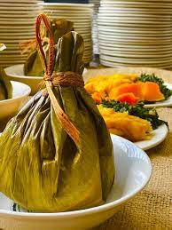
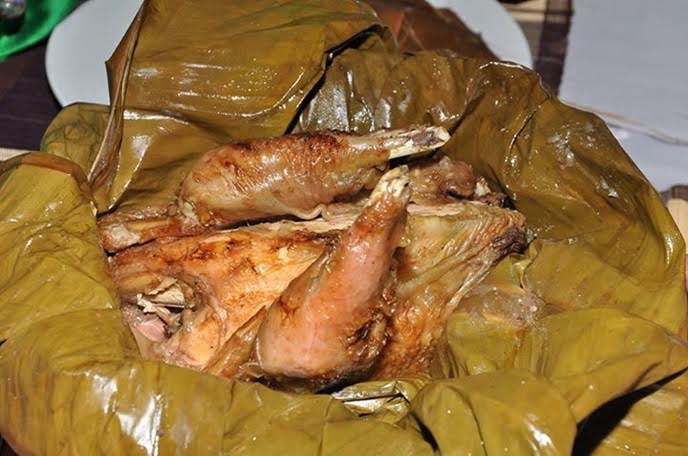

Home
LUWOMBO


Ingredients
Chicken seems to be the traditional meat to use in this dish, but pork or beef are fine as well.
- 2 pounds chicken, pork or beef (cut into serving-sized pieces)
- 1 cup unsalted peanuts, finely ground
- 2 onions, halved, and then sliced crosswise
- 1 cup sliced mushrooms
- 4 tomatoes, chopped
- 1 chicken stock cube
- Salt and black pepper, to taste
- Banana leaves (parchment or tinfoil will work)
- 1 smoked fish (optional)
- 3 plantains, peeled and cut into 1” chunks
Mainly served during introduction Ceremonies(A lady introducing her boy friend to her parents). I greatly crave this dish!